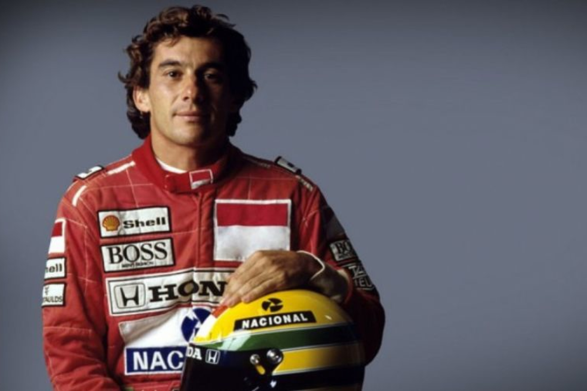

Fernando Alonso Díaz (Oviedo, Asturias; 29 de julio de 1981) es un piloto de automovilismo español, galardonado como Premio Príncipe de Asturias en 2005. Ha ganado dos veces el Campeonato Mundial de Fórmula 1 en 2005 y 2006 con el equipo Renault, resultó subcampeón en 2010, 2012 y 2013 con la escudería Ferrari, y obtuvo un tercer puesto en 2007 con McLaren. Fue campeón del Campeonato Mundial de Resistencia de la FIA en 2019, las 24 Horas de Le Mans en 2018 y 2019, las 24 Horas de Daytona de 2019 y el Campeonato Mundial de Karting en 1996.
En su carrera ha competido para los equipos Minardi, Renault, McLaren, Ferrari, Alpine y Aston Martin en Fórmula 1, siendo la escudería de Maranello su equipo desde 2010 hasta 2014, donde logró sus tres subcampeonatos y un Grand Chelem. Se marchó de Ferrari y en 2015 volvió a McLaren-Honda hasta la retirada de 2018. Tras dos años fuera de la categoría, en 2021 volvió con la escudería Alpine, parte de la familia Renault, con la que ganó sus dos campeonatos. Desde 2023 forma parte del equipo Aston Martin sustituyendo a Sebastian Vettel.
Además de competir en la máxima categoría, ha pilotado en las 500 Millas de Indianápolis de 2017, 2019 y 2020 junto a McLaren, llegando a liderar la carrera y siendo elegido novato del año en su primera participación, en las 24 Horas de Daytona de 2018 con un Ligier para United Autosports, en las 24 Horas de Daytona de 2019 con un Cadillac para Wayne Taylor Racing, y en el Campeonato Mundial de Resistencia de 2018-19 y el Rally Dakar de 2020 para Toyota Gazoo Racing.
Fernando Alonso es el piloto con más carreras comenzadas de la historia de la Fórmula 1: 376. Es el séptimo piloto con mayor número de victorias en la historia de la categoría con 32 grandes premios ganados y el cuarto piloto con más podios igualado con Alain Prost: 106.45 Es el tercer piloto con más circuitos con podio empatado con Kimi Räikkönen: 30.6 Es junto a Max Verstappen, el piloto que más posiciones de salida diferentes ha convertido en victoria:. Entre sus triunfos se cuentan tres en el Gran Premio de Malasia, tres en el Gran Premio de Alemania, tres en el Gran Premio de Europa y tres en el Gran Premio de Baréin. En 2017, fue incluido en el Salón de la Fama de la FIA.891011 En 2019 volvió a entrar en el Salón de la Fama de la FIA, esta vez como campeón del WEC, convirtiéndose en el primer piloto de la historia en ser miembro del Salón de la Fama por partida doble por pertenecer a la lista de campeones de dos categorías mundiales de la FIA diferentes.1213
Junto a Alfonso de Portago, Pedro de la Rosa y Carlos Sainz Jr., es uno de los cuatro españoles que han alcanzado el podio en Fórmula 1, siendo junto a este último los únicos que han logrado victorias. Es, además, el único piloto de la historia en debutar con tres escuderías diferentes obteniendo un podio, McLaren (2007), Scuderia Ferrari (2010) y Aston Martin (2023), y uno de los cuatro pilotos que han debutado en Ferrari con victoria en la primera carrera (junto con Mario Andretti, Nigel Mansell y Kimi Räikkönen).

| 
| 
| 

| | 
|